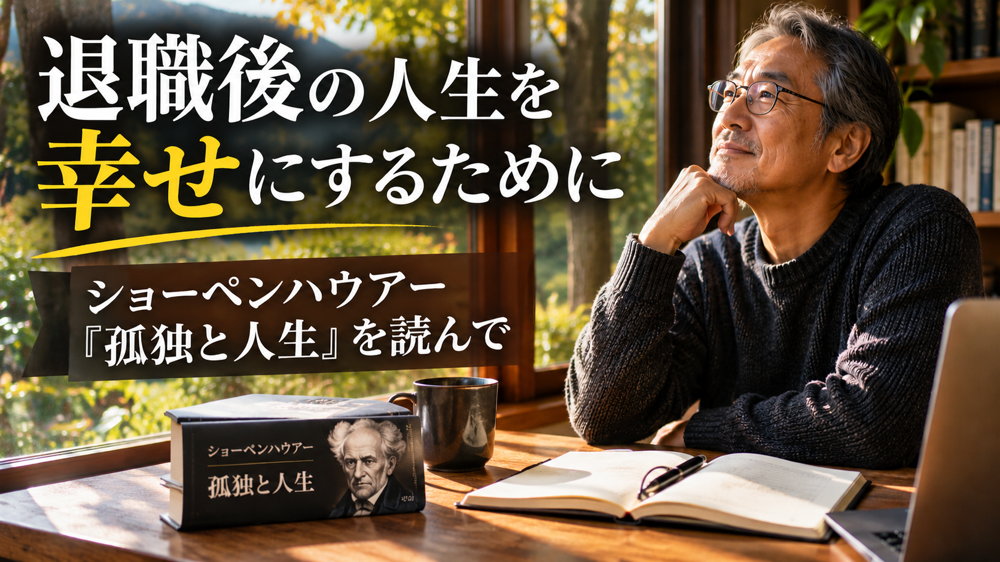

退職後の人生を幸せにするために｜ショーペンハウアー『孤独と人生』から考える幸福

老後の幸せは、何かを手に入れることだけではありません。今ある日常に気づき、自分の強みを使って何かを実現していくことも、人生の大きな喜びになるのではないでしょうか。
はじめに：老後の幸せとは何だろう？

50代、60代になると、これまでとは違った悩みが増えてくるようです。
私は、60歳を前にして、「生きがい」や「人生の目標」に関連する疑問がわいてきました。これまで、競争ばかりの社会で、闇雲にお金を稼ぐために頑張ってきました。世間では、「仕事のやりがい」や「目標に向かって頑張れ」と後押しされます。私は、むしろ自分は会社の歯車の一つだと感じるようになり、幸せになるどころか、「今後このままの生活を続けて良いのだろうか」と不安を感じるようになりました。
仕事を続けるべきか、退職後は何をして過ごすのか。老後のお金は足りるのか。健康を維持できるのか。そして、これからの人生に何を求めればよいのか。
そんなときに読んだのが、ショーペンハウアーの『孤独と人生』です。
この本には、人生の幸福とは何か、人はなぜ不幸を感じるのか、他人との関係や孤独とどう向き合うべきなのか、といったことが書かれています。
特に注目して読んだのは、50代、60代など、老後の人生を考えるうえで非常に大切な部分に触れられているところです。
今回は、この本から考えたことと、私自身の経験を交えながら、老後を満足して過ごすために大切だと思うことを整理してみます。
「生の哲学」の先駆者：ショーペンハウアー
アルトゥル・ショーペンハウアー（1788～1860年）は、19世紀ドイツを代表する哲学者です。
カントの思想を受け継ぎながら、人間の欲望や苦悩、幸福、孤独といった、人間が生きていくうえで避けて通れない問題を深く考察しました。
彼の哲学の特徴は、人生を決して楽観的には捉えなかったことです。
人間は欲望を持ち、何かを手に入れようと努力します。しかし、一つの欲望が満たされても、すぐに次の欲望が生まれます。欲しいものが手に入らなければ苦しみ、手に入れば今度は退屈を感じる。こうした人間の姿を、彼は厳しい視点で見つめました。
一方で、他人の評価や財産、地位などに振り回されず、自分自身の内面を豊かにすることの大切さも説いています。
代表的な著作には『意志と表象としての世界』があり、人生や幸福についての考察は『幸福について』などの著作にもまとめられています。また、『孤独と人生』として知られる文章も、他人との関係や孤独、自分自身の生き方を考えるうえで示唆に富んでいます。
ショーペンハウアーの思想は、後のニーチェなどにも影響を与えました。
「生の哲学」の先駆者ともいわれる彼の考え方は、現代を生きる私たちにも、多くの問いを投げかけてくれます。
特に、仕事や競争から少しずつ距離を置き、自分の人生と向き合う50代、60代にとって、幸福とは何かを考えるきっかけになるのではないでしょうか。
老後の不安が消えない理由とは？

老後になると、お金、健康、人間関係など、さまざまな不安が増えていきます。
現役時代は仕事や家庭のことで忙しく、目の前の課題に追われる日々を過ごす方が多いのではないでしょうか。
ところが、退職して自由な時間が増えると、今度は自分自身の将来について考える時間が増えていきます。
その時間は、本来なら自由を楽しむために残しておいた時間のはずです。
老後の何もすることがない時間が続くと、まだ起きてもいない問題について、あれこれ考えてしまい、不安や退屈にとらわれやすくなると考えられます。
老後のお金は足りるだろうか。病気になったらどうしよう。家族との関係はこの先も良好だろうか。
頭の中で将来の問題を想像し、不安を大きくしてしまうのです。
私自身も、老後のお金に関する不安は特に大きいです。株価が下落するたびに、自分の資産が減っていくことに気落ちします。
健康についても同じです。喉に違和感があったり、胸に痛みを感じたりすると、大きな病気ではないかと考えてしまい、気持ちが落ち込むことがあります。
もちろん、お金や健康の問題を軽視することはできません。必要な備えや医療機関への相談は大切です。
ただ、まだ起きていない問題について、毎日不安を膨らませていても、今の生活が楽しくなるわけではありません。
老後の自由な時間を、不安を考えるためだけに使ってしまうのは、非常にもったいないことだと思います。
他人からの評価や所有物に幸せを求めない

若いころは、高級な服やバッグ、贅沢な食事、会社での地位や名声などを手に入れることが幸せだと考えていました。
しかし、ショーペンハウアーの思想から考えると、自分の外側にあるものに幸福を求めすぎることには問題があるようです。
財産や持ち物、他人からの評価は、自分の思いどおりになるとは限りません。どれだけ高価なものを手に入れても、やがてそれが当たり前になってしまいます。
会社で昇進したときは嬉しくても、その喜びが永遠に続くわけではありません。むしろ、手に入れたものを失ったときには、大きな落胆を感じることもあります。
他人から良く思われたい、認められたいという気持ちが強くなりすぎると、いつの間にか他人の評価に振り回されてしまいます。
そして、他人と自分を比較するほど、自分に足りないものばかりが目につくようになります。自分より豊かな人、自分より幸せそうな人を見て、落ち込んでしまうのです。
私の若いころは、ブランド品が街にあふれていた時期でした。私も無理をして高級な服やバッグを身に着けていました。
他人と比較しては、自分に足りないものを探し、落ち込んでいたこともよくありました。今振り返ると、あれほど他人の目を気にする必要はなかったと思います。
50代、60代からは、他人にどう見られるかより、自分がどう感じるかを大切にしたいものです。
本当の幸福とは、苦悩がないことに気づくこと

ショーペンハウアーの幸福観で印象に残るのは、幸福を何かを手に入れることとしてではなく、苦痛や不幸から解放されている状態として捉える考え方です。
ヴォルテールには「幸福は幻に過ぎず、苦痛こそ現実」という趣旨の言葉があります。
私たちは、普段の生活で満たされていることには、なかなか気づきません。
例えば、体のほとんどが健康であっても、少し不調を感じる場所があれば、そこばかり気になってしまいます。
何不自由ない生活を送っていても、たった一つ嫌なことがあると、それが頭から離れず、目の前のことに集中できなくなります。
本来なら、健康であること、家族が元気であること、安心して眠れる場所があること、毎日の食事に困らないことは、とても恵まれたことです。
私自身も、改めて考えてみると、恵まれていることはたくさんあります。大きな病気を抱えていないこと。家族が健康で、仲良く暮らせていること。毎日の寝床や食事がきちんとあること。
それでも、一つ嫌なことがあるだけで、気持ちが落ち込んでしまうことがあります。
人間は、満たされていることよりも、不足していることや不快なことに注意を向けやすいのかもしれません。
だからこそ、今ある生活の中で、苦痛がなく穏やかに過ごせている時間を大切にしたいと思います。
幸せとは、特別な出来事が次々と起きることではなく、病気や災難、人間関係のトラブルなどから離れ、穏やかな日常を送れることなのではないでしょうか。
過去や未来でなく、今この瞬間を生きる
過去の失敗を悔やんだり、将来の不安を考えたりしていると、今という時間を楽しめなくなってしまいます。
しかし、過去は変えることができません。未来も、すべてを予測することはできません。
私たちが実際に生きているのは、今この瞬間です。
今日、特に問題が起きていないのであれば、その穏やかな時間をそのまま楽しめばよいのです。
毎日は、それぞれが人生の中で一度しかない、かけがえのない一日です。
大きな病気や災難に遭遇したとき、人は初めて、何も問題がなかった普通の日々がどれほど幸せだったかに気づくことがあります。
そうなる前に、何も起きていない今日を大切にしたいものです。
老後は時間がたくさんあります。その時間を、過去への後悔や未来への不安だけに使うのではなく、今できること、今楽しめることに使っていきたいと思います。
自分の強みを使って、何かを実現する

今回、本を読んで特に大切だと感じたのが、自分自身の能力や特徴を理解し、それを使って何かを実現することです。
何かを作ること。新しいことを学ぶこと。自分で考え、実際に行動すること。そして、一つのものを完成させること。
こうした活動は、人生に充実感を与えてくれます。
他人から評価されるためではなく、自分の能力を使って、自分なりの目標を実現することに意味があるのだと思います。
私自身、これまでの経験を振り返ってみると、いくつかの強みがあります。
IT技術について、多少なりとも知識があること。プログラム作成について、ある程度の経験があること。5年ほど投資を続け、お金や資産運用について学んできたこと。老後の健康や幸福について、日頃から考えていること。
こうした経験を活かして、NOTEやブログ、YouTubeで情報発信を始めました。その準備のために、AIを活用し、プログラムを実行し、哲学書を読むようにもなりました。
現在、アクセス数は決して多くありません。しかし、自分で考えたものを形にし、それが完成したときには、大きな満足感があります。
次は何を作ろうか、何を調べようかと考えていると、時間が足りないと感じるほど充実しています。
以前は、退職後に何をして過ごせばよいのか、漠然とした不安がありました。しかし、今は自分の強みを使って、新しいことに取り組む時間が楽しくなっています。
誰かに認められるためではなく、自分自身が満足できるものを作る。これこそ、人生の後半における大きな喜びの一つなのではないでしょうか。
50代・60代からの人生は、自分の尺度で生きる
若いころは、他人と比較し、他人からの評価を気にしながら生きてきました。収入、地位、持ち物、仕事での成果。そうしたものを追い求めることが、幸せにつながると信じていました。
しかし、人生の後半に入った今は、少し違った考え方を持つようになりました。
他人と比較する必要はありません。他人に良く思われることばかり考える必要もありません。高価なものを所有しなくても、幸せを感じることはできます。
健康で、家族がいて、安心して暮らせる場所がある。その日常を大切にしながら、自分の強みを使って何かに取り組んでいく。それが、自分にとって満足のいく人生につながるのだと思います。
もちろん、お金や健康、人間関係の不安が完全になくなるわけではありません。
それでも、不安ばかりに目を向けるのではなく、今ある幸せに気づき、自分でできることを一つずつ実現していく。
50代、60代からの人生は、他人の尺度ではなく、自分自身の尺度で作っていけばよいのではないでしょうか。
人生は、まだまだ自分で作ることができる

ショーペンハウアーの『孤独と人生』を読んで、改めて考えたことがあります。
老後の人生では、多くの時間を手に入れられる一方で、その時間を持て余し、退屈や苦痛とともに過ごす人もいるようです。一方で、長い時間を使って自分のやりたいことを思う存分行い、幸せな生活を送る人がいるのも事実です。
幸せになるために、必ずしも新しいものを手に入れる必要はありません。
今あるものに感謝し、余計な不安や他人との比較から少しずつ離れ、自分自身の能力を使って何かを実現していく。
その違いが、老後の人生を苦痛に耐える時間にするのか、自分のやりたいことを実現する充実した時間にするのかを左右するのではないでしょうか。
50代、60代は、人生の終わりに向かう時期ではありません。これまでの経験を活かし、自分のための人生を作り直すことができる時期です。
私も、まだまだ学びたいこと、作りたいもの、実現したいことがあります。アクセス数や他人からの評価に一喜一憂するのではなく、自分が納得できるものを一つずつ形にしていきたいと思います。
人生の後半を、誰かと比較するためではなく、自分自身が満足するために使っていきましょう。
NOTEでもこの記事を公開しています。